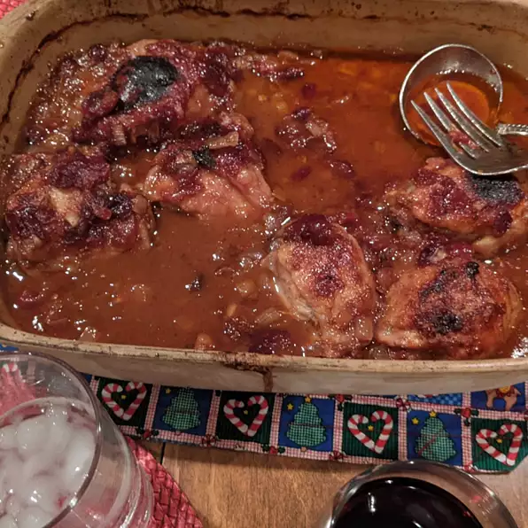

Cranberry BBQ Chicken

Cranberry BBQ Chicken.
This cranberry BBQ chicken recipe is the perfect meal for a summer night! The chicken is juicy and full of
flavor, and the cranberry BBQ sauce is the perfect sweet and tangy topping. My grandma never made this, but
since this is a recipe site I feel obliged to bring her up. This dish is sure to be a hit with
your family and friends!
Ingredients
-
1 (2 to 3 pound) whole chicken, cut into pieces
-
2 tablespoons butter
-
½ teaspoon salt
-
¼ teaspoon ground black pepper
-
½ cup chopped celery
-
1 onion, chopped
-
1 (16 ounce) can whole cranberry sauce
-
1 cup barbecue sauce
Steps
-
Preheat oven to 350 degrees F (175 degrees C).
-
In a large skillet brown the chicken in butter/margarine. Season with salt and pepper. Remove from skillet
and place in a lightly greased 9x13 inch baking dish.
-
In the drippings (in the skillet), saute onion and celery until tender. Add cranberry sauce and barbecue
sauce. Mix well.
-
Pour cranberry mixture over chicken and bake in the preheated oven for 90 minutes, basting every 15 minutes.